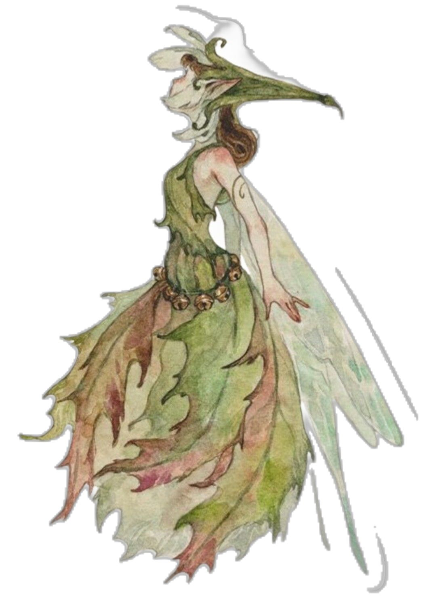
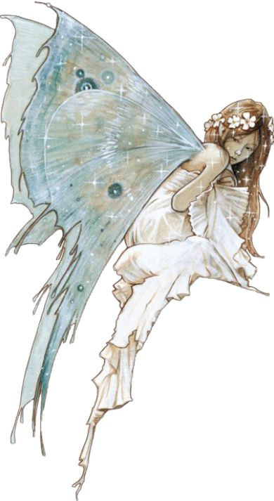
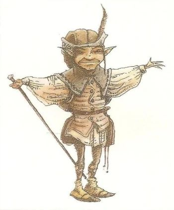

Types of Fairies

Pixies
Pixies are small, mischievous fairies known for their playful nature. They are often depicted with wings, pointed ears, and a mischievous smile. Fairies are believed to live in gardens and forests, where they enjoy playing tricks on humans. Despite their playful antics, Pixies are generally harmless and are often associated with bringing good luck.

Sprites
Sprites are elemental fairies associated with water and air. They are delicate and ethereal, often depicted as glowing or translucent beings. Sprites are known for their connection to nature, particularly rivers, streams, and breezes. They are gentle and often help to maintain the natural balance in their environments.

Brownies
Brownies are household fairies known for their helpful nature. They are small, human-like beings that live in homes, often helping with household chores while the occupants sleep. Brownies are generally friendly and hardworking but can become mischievous if they feel unappreciated or disrespected.